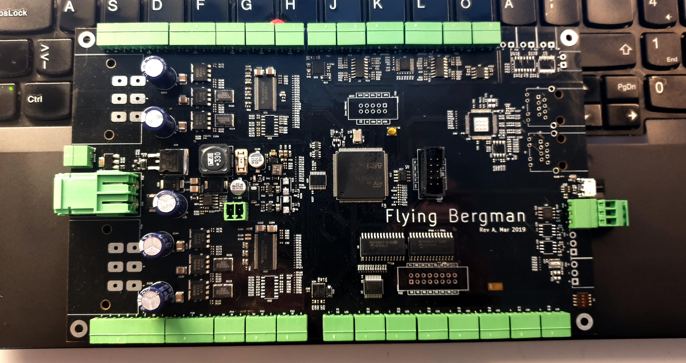
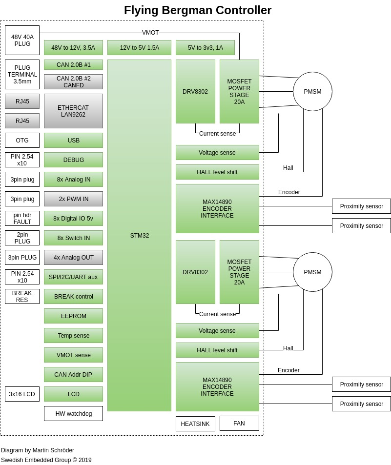
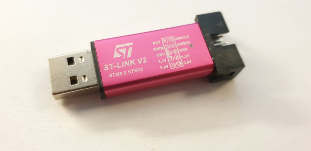

The Flying Bergman Crane System Controller
Table of Contents
- 1. Introduction
- 2. FlyingBergman Quick Start
- 3. Pin description and pinout
- 3.1. Interfaces
- 3.1.1. Motor outputs
- 3.1.2. Main power input
- 3.1.3. Brake resistor output
- 3.1.4. Universal encoder inputs
- 3.1.5. Hall sensor inputs
- 3.1.6. High voltage inputs
- 3.1.7. 12V output
- 3.1.8. Button inputs with optional LED backlight outputs
- 3.1.9. CAN-FD interface
- 3.1.10. CAN interfaces
- 3.1.11. LCD display connector
- 3.1.12. Expansion interface
- 3.1.13. USB FS interface
- 3.1.14. EtherCAT interface
- 3.1.15. Analog inputs
- 3.1.16. Debug connector
- 3.1.17. Analog outputs
- 3.1.18. CAN address switch
- 3.1. Interfaces
- 4. Getting started
- 5. Developing software
- 6. Electrical characteristics
- 7. Board revisions
- 8. Glossary
User manual
1 Introduction
This user manual aims to describe in detail the usage, debugging and
implementation of the Flying Bergman motor controller. It is a continuously
evolving document and if, as the reader of this manual, you feel that something
is either not here or is not explained in sufficient detail then please do send
you feedback to info@swedishembedded.com and your feedback will be taken into
consideration for future releases of this document..

Figure 1: Flying Bergman Controller Board

Figure 2: Flying Bergman Crane System
1.1 About this board
This board is designed to control Flying Bergman Crane System. The system consists of a control unit and a motor control board both of which are connected together by a cable. The same board design is intended to be used in both the motor control application as well as the user hand held control panel. The CAN bus address switch (S2) is used to switch software mode between master (control panel) and slave (motor drive).
When this board was designed, it was intended to be as versatile as possible and provide good foundation for further development and experimentation. It may not be the cheapest design, but it is most definitely a very flexible one and can be mixed and matched with other hardware and software to produce the best end user experience.
1.2 Differences compared to Swedish Embedded Motordrive 2X
The block diagram below shows peripherals mounted on the Flying Bergman board and the ones that are not available on this variation are grayed out.

Figure 3: Block diagram of the controller board
2 FlyingBergman Quick Start
- Power on
Power on the fully connected FlyingBergman system (two boards, motors, input devices etc).
The
home button ledshould slowly loop between high and low intensity.Joystickis disabled.- Initialize
Press
home buttononce.The
home button ledwill start blinking quicklyJoystick is operational.
- Home in
Move crane into home position using the joystick.
Press and hold
home buttonfor3 secondsto save home positionPreset buttonsshould light indimglow and all presets have been reset.Crane is now operational
in manual mode. To use presets follow steps below.Adjustdesiredintensityand maximumspeedusing the knobs on the control panel.- Position
Move the crane into
positionusing thejoystickPress and
holdone of thepresetbuttons for3 secondsto save the position as that presetWhen preset is set, corresponding
preset ledwill light with constantbrightlight.Repeating this operation on a preset that's been saved previously will overwrite the previous preset with new position.
- Activate
To
Activate preset, quicklypress preset buttoncorresponding to that preset.The crane will instantly start moving to the preset position using currently set intensity and maximum speed.
To
abortthemove, simplywigglethejoystickfrom the center position.
3 Pin description and pinout

Figure 4: Graphical overview of the Flying Bergman board pinout.
3.1 Interfaces
| Ref | Name | Function |
|---|---|---|
| P46,P45 | Motors | 3 phase PMSM or DC motor connectors |
| P18 | Main power | Main power connector |
| P49 | Brake resistor | Brake resistor output |
| P37,P41 | Motor encoder | Universal encoder interface |
| P48,P47 | Hall sensor | Hall sensor inputs |
| P44,P43,P42,P38,P39,P40 | Sensor inputs | Brake and high voltage sensor digital inputs |
| P23 | 12V output | 3A 12V output |
| P1,P2,P3,P4,P5,P6,P7,P8 | Buttons and LEDs | Internally debounced button connectors with led outputs |
| P24 | CAN-FD | CAN-FD high speed interface (if available on board revision) |
| P20 | CAN2 interface | CAN2.0B capable interface |
| P19 | CAN1 interface | CAN2.0B capable interface |
| P25 | LCD display | Parallel 8-bit LCD display connector (can support other display through software) |
| P17 | Debug | Serial JTAG + default debug console UART |
| P28 | UEXT interface | Expansion interface with UART, I2C and SPI |
| J1 | USB-FS | USB FS (12Mbit) serial interface |
| J2,J3 | EtherCAT interface | EtherCAT slave interface |
| P40,P14,P13,P9,P11,P16,P16 | Analog inputs | 5V capable analog inputs with preamplifiers |
| P21,P27,P26,P22 | Analog outputs | Resistive analog outputs (digital potentiometer) |
3.1.1 Motor outputs
These are the main motor outputs. Depending on the software, these connectors can drive various types of motors. Please check if desired configuration is supported by the firmware version that you are currently using.
Revision A of the board uses a connector that does not quite fit on the PCB. Newer versions of the board will use a better connector (1720479).
Regardless of the board revision, the following plug can be used: 1778078
- PMSM 3-Phase motor
In this configuration the ouputs will be generating 3-phase sinusoidal voltages.
Pin Description A Phase A B Phase B C Phase C - One DC motor or servo
When connecting one DC servo or motor then only leads B and C are used. The output should be configured for one servo (default for FlyingBergman firmware) and will be generating switching DC voltage on lead B and C which will be reversed if the motor should travel in reverse (negative direction).
The positive lead on the motor is whichever wire, when connected to positive output C (and the other wire connected to common ground) would make sensed motor position to increase in the positive direction.
Pin Description A Unused B Negative lead C Positive lead - Two DC motors or servos
In this configuration, two motors can be powered from the same connector and lead B will be outputting a constant voltage that is 1/2 of the main supply voltage. It is worth noting that the highest voltage applied to each motor can be at most 1/2 of the supply voltage so the motors will spin half as fast as they otherwise would if one connector is dedicated to one motor.
Also, in this configuration the motors must either have some type of analog sensor or be driven in open loop since it is not possible to connect 4 hall sensors to the board at the same time.
Pin Description A Positive lead motor 1 B Common ground C Positive lead motor 2
3.1.2 Main power input
This is the main power input that should be connected to a battery or some power source that can provide the necessary motor current. The drive can be powered from bench power supply since the internal diode used for brake resistor circuit will prevent reverse currents from flowing to the power supply when motor is regenerating.
NOTE: this has the disadvantage that regeneration is not possible on a production unit when using the batter, however the effect of regeneration is for the most part only relevant in a setting where gravity can free spin the motor. In the FlyingBergman application the motors use worm gears and so are impossible to spin manually. Thus the effect of regeneration is insignifficant.
Main power input is protected against reverse polarity connection.
Do not exceed maximum ratings for the power input. It is a very good idea to keep the supply voltage at least 12V below maximum rating because during deceleration the power rail voltage level may rise and so it is good to have a margin. This is specially true if no brake resistor is connected. In such situation it is very important to limit the maximum deceleration rate of the motor in order to avoid possible damage to the board due to a sudden overvoltage.
The power connector 1720466 uses corresponding plug: 1778065
3.1.3 Brake resistor output
This output is designed to drive a brake resistor which will be engaged as soon as the motor power rail voltage rises higher than VSUPPLY+0.6V. This typically happens when the motor is commanded to come to a sudden stop but still has inertia which continues to force it to go forward. With geared motors this effect is shorter but still present.
To keep the voltage level under control, the brake circuit on the board automatically connects the brake resistor between VMOT and GND. This creates a high current flow through the brake resistor, dumping the excess energy as heat instead of damaging the board. It is recommended to either use a brake resistor or limit maximum commanded deceleration rate of the motor.
The plug for this connector is: 691363110002
3.1.4 Universal encoder inputs
These inputs use a versatile hardware encoder interface which is capable of operating at voltages up to +-40V DC. It supports both differential and single ended encoders encoders. This is achieved using MAX14890 IC from Microchip which also provides simplified error detection to detect faulty wires and other connectivity errors. See the datasheet for more detail.
Note: at the time of this writing, the firmware does not currently check for connectivity errors on the encoder lines. When this has been added, this note will be removed.
Also, only single ended mode is currently configured and used.
| Electrical characteristics | Min | Typ | Max |
|---|---|---|---|
| Absolute maximum input voltage | -40V | - | +40V |
3.1.5 Hall sensor inputs
This is a 5V HALL sensor connector with 5V power ouptut for hall sensor. If this input is not used it can be configured in software as a generic 5V level input.
Connect the hall sensor as follows:
| Lead | Hall sensor |
|---|---|
| A | Hall sensor for phase A |
| B | Hall sensor for phase A |
| C | Hall sensor for phase A |
| 5V | Common hall sensor power input |
| GND | Ground |
The input is connected through a resistor divider to STM32 hall sensor capable inputs. Therefore voltage characteristics described in the STM32F429 datasheet apply after taking into consideration the resistor divider..
| Electrical characteristics | Min | Typ | Max |
|---|---|---|---|
| Input signal high level | VSS-0.3V | 5V | 6V |
3.1.6 High voltage inputs
These are extra inputs that are connected through the MAX14890 encoder interface and support high voltage signals.
| Electrical characteristics | Min | Typ | Max |
|---|---|---|---|
| Absolute maximum input voltage | -40V | - | +40V |
3.1.7 12V output
The output of the on-board 12V regulator is available through a vertical connector on the top side of the board. This output is limited by fuse to 3A output current. Therefore do not exceeed 80% of the current limit on this output.
| Electrical characteristics | Min | Typ | Max |
|---|---|---|---|
| Output voltage | 11.5V | 12.0V | 12.5V |
| Absolute maximum current | - | - | 3A |
3.1.8 Button inputs with optional LED backlight outputs
These are button connectors with optional dimming backlight LED output. The button inputs have internal pullups and are designed to be connected via mechanical buttons or switches to the GND line. All button inputs are debounced in hardware using the MAX6818 button interface.
The LED output is fully programmable using the on-board LP55231 LED controller. All LED outputs have internal power dissipation limit that automatically keeps it within operating conditions of the LED controller..
The connector has three pins:
| Pin | Description |
|---|---|
| GND | Common ground |
| SW | Button input |
| LED | LED PWM output |
| Electrical characteristics | Min | Typ | Max |
|---|---|---|---|
| SW pin input voltage | -30V | - | +30V |
| LED pin output current | 0 | - | 100mA |
| LED output voltage | - | 4.5V | - |
3.1.9 CAN-FD interface
This is a high speed CAN-FD interface currently not supported on the FlyingBergman board.
3.1.10 CAN interfaces
These are standard CAN2.0B 1Mbit/s can interfaces implemented using TJA1044 CAN bus transceiver. The interfaces support CANOpen protocol as implemented by the firmware. CANOpen uses device addressing and the lower 4 bits of the device address can be set using the on-board 3.1.18 micro dip-switch.
It is currently a convention with FlyingBergman boards to use address 0x01 for the control unit and 0x02 for motor driver unit.
| Electrical characteristics | Min | Typ | Max |
|---|---|---|---|
| Maximum voltage on H and L pins | -42V | - | +42V |
| Maximum differential voltage on H & L | -27V | - | +27V |
| Maximum data rate | - | - | 1Mbit/s |
3.1.12 Expansion interface
This is an expansion interface allowing connection of sensors, displays and other peripherals that connect to the board over UART, I2C or SPI electrical interface. This interface has been popularized by a bulgarian company named Olimex who has been manufacturing many expansion modules that all use the UEXT interface.
This interface is currently not used on the FlyingBergman board.
3.1.13 USB FS interface
This is a high speed USB interface.
It is capable of speeds up to 12Mbit/s and makes it possible to make the board appear to a computer as any kind of USB device. This opens up to possibilities such as making configuration EEPROM writable as a disk drive from the computer side or making high speed current measurements available over a USBTMC protocol (allowing easy interoperability with sigrok enabled GUI tools).
As of today (2019-05-08), only partial software support has been implemented for this interface.
3.1.14 EtherCAT interface
This is a high speed ethernet interface capable of operating in EtherCAT mode. It provides similar type of network as CAN bus, but with much better error tolerance and a lot faster speeds (100Mbit/s for ethercat and 1-5Mbit/s for CAN).
The embedded LAN9252 controller houses complete EtherCAT protocol stack and enables communication with the board over conventional Ethernet network.
At this time (2019-05-08) this interface has not been implemented in software yet.
3.1.15 Analog inputs
Analog inputs support both passive (potentiometer) and active (hall joystick) inputs. They are connected through on-board op-amps and support 5V voltage levels which are translated to 3.3V for input to the on-board controller.
The board provides 8 analog inputs, 4 of which are paired into two pairs on 4 pin connector each (P9 and P11) which are intended to be used for two joysticks (although there is nothing special about these inputs other than larger connectors being used).
All 8 analog inputs are multiplexed, meaning that fully simultaneous sensing on all inputs at once is not possible. The software has to cycle through each input in turn and sample it. The sample rate is determined by software (but is generally much lower than for on-board signals). This means that these inputs are not suitable for sensing high frequency signals.
| Electrical characteristics | Min | Typ | Max |
|---|---|---|---|
| Maximum input voltage | 0 | - | 7V |
| Measurable voltage range | 0.1V | - | 4.9V |
3.1.16 Debug connector
This is a debug connector designed for connecting ST-Link-V2 debugger together with a 3.3v UART to USB converter for accessing the interactive console on the device. The UART lines connect internally to UART1 on the STM32.
| Pin | Name | Description | Connects to |
|---|---|---|---|
| 1 | VCC | 3.3v intput power. Should only be connected if the board must be powered from the programmer | USB to UART or ST-Link-V2 dongle 3.3v output |
| 2 | GND | Return ground | BOTH USB to UART and ST-Link-V2 dongle 1 |
| 3 | TX | Serial text console output. Connect to TX line on the USB to UART dongle 2 | USB to UART |
| 4 | RX | Serial text console input. Connect to TX line on the USB to UART dongle | USB to UART |
| 5 | RST | Chip reset signal. Can be left unconnected. | ST-Link-V2 |
| 6 | SWIO | Serial JTAG Data. Connects to ST-Link-V2 SWIO pin | ST-Link-V2 |
| 7 | SWCLK | Serial JTAG Clock. Connects to | ST-Link-V2 |
| 8 | SWO | ARM debug trace output. Usually not used but can be used to extract high speed trace directly from the core. Works like UART TX line with internal hardware fifo. | Additional USB to UART dongle |
| 9 | BOOT | Boot mode selection. Pull to 3v3 to enable boot mode if flashing over the USB to UART converter. Leave unconnected if flashing using ST-Link-V2. | 3.3v power line |
| 10 | N/C | Not connected | - |
4 Getting started
Before starting out it is a good idea To power on the board connect a supply capable of delivering required supply voltage and current to the main power connector of the board.
4.1 Connecting motors
Motors are connected to two motor connectors: P45 and P46. Each connector has wires which are labeled A, B and C. Each pair of outputs (ie A + B) supports fully sinusoidal differential output suitable for driving inductive loads and motors.
NOTE: the Flying Bergman project uses only DC motors so the three phase functionality of the inverter is never used.
4.1.1 DC motors
Connect each motor to the C (positive) and B (negative) outputs of each connector. The connections to the motors need to match connections of motor encoder or analog position sensor. The information about motor pinout is usually found in the motor datasheet or on some label on the motor itself. If no label is available then use trial and error to find the right pinout. The pinout rules are as follows:
- When motor "positive" wire from the DC motor is connected to "positive" pin C on the motor connector then the position sensor should read constantly increasing position.
- If position decrease instead of increasing then simply swap the motor wires connected to pin B and pin C or switch encoder/sensor signals if it desirable that "positive" rotation should happen in a specific physical direction.
4.1.2 AC motors
Support (2019-05-08) for AC motors is currently not implemented in software.
4.2 UART console interface
Manu commands related to both peripherals and device functionality are available for testing through the debug console. This is a simple console where different device drivers included in the build can register their commands.
To connect to the console use an application like picocom.
picocom -b 921600 /dev/ttyUSB0
Upon successful connection you should press enter once to see if you can get a
shell. If the board is operational then you should see # at the begining of
the line to indicate that commands can be entered.
You can type any unrecognized command to get help:
> asadf
cpuinfo
show cpu info
reboot
reboot cpu
can1
STM32 CAN interface
...
Many device driver commands are bound to names that are defined in the device tree. For example if you define a can interface like this in the device tree:
can1: can1 { compatible = "st,stm32_can"; reg = <CAN1>; prescaler = <8>; sjw = <1>; bs1 = <5>; bs2 = <2>; console = <&console>; can1_gpio { compatible = "st,stm32_gpio"; pinctrl = < GPIOA GPIO_Pin_11 (GPIO_AF_CAN1 | GPIO_OType_PP | GPIO_PuPd_NOPULL | GPIO_Speed_100MHz) GPIOA GPIO_Pin_12 (GPIO_AF_CAN1 | GPIO_OType_PP | GPIO_PuPd_NOPULL | GPIO_Speed_100MHz) >; }; };
Then the command responsible for getting information about this interface will
be called can1. This is however driver specific, so depending on how a driver
chooses to register commands, this behavior may differ.
Available debug console commands on this board:
| Command | Short description |
|---|---|
| cpuinfo | dumps information about the processor |
| reboot | restart the system |
| can1 | can1 interface low level access |
| i2c1 | i2c1 interface low level access |
| i2c2 | i2c2 interface low level access |
| ui | a simple curses user interface |
4.2.1 cpuinfo :: cpu information
This command shows information about the cpu. Most of these values are only interesting for debugging the CPU configuration.
Example:
> cpuinfo
RCC: pllm: 8, plln: 200, pllp: 2, pllsrc = 1, pllq = 4, pllr = 0
CPU clock source: HSE
PLL clock source: HSE
Processor clock speed: 1050000 (exact)
SYSCLK: 100000000, HCLK: 50000000, PCLK1: 50000000, PCLK2: 50000000, USB: 50000000
SysTick reload value: 50000
4.2.2 reboot :: restart the board
Reboots the processor.
Options:
- b
- reboot to system bootloader. This is useful for flashing over UART interfaces.
Example:
> reboot .. system reboots ..
4.2.3 can :: CAN bus low level access
This command provides low level access to the CAN bus driver.
Options:
- status
show status for the interface
> can1 status TX count: 0 TX dropped: 0 RX count: 0 RX dropped: 0 TX timeout: 0 RX on FIFO0: 0 RX on FIFO1: 0 Total errors: 0 Bus off errors: 0 Bus passive errors: 0 Bus errors warnings: 0 FIFO Overflow errors: 0
4.2.4 i2c :: low level i2c access
This command allows low level access to the i2c driver. It is instantiated with the name of the node in the device tree for each defined i2c interface.
Options:
- status
show status for the i2c interface
> i2c1 status TCN Complete: 151333 TCN Failed: 0 Timeouts: 0 Sent: 227048 bytes Received: 75626 bytes BERR Errors: 0 ARLO Errors: 0 AF Errors: 0 OVR Errors: 0 PEC Errors: 0 TOUT Errors: 0 SMBALERT Errors:0
4.3 CANOpen interface
NOTE: this section is currently a draft so while canopen interface is operational, it currently does not export the variables below.
The CANOpen interface provides access to all the measurements as well as many other metrics that are not available over the UART interface. The board does not actually expose a well defined CANOpen profile at this stage. Instead it exposes a basic communication profile allowing configuration of synchronized PDOs and it also exposes all of the variables as part of the manufacturer segment in canopen (starting at 0x2000). This should give sufficient flexibility for testing this concept without putting too much time into trying to make it into a "proper" CANOpen device (which it is not even close to being).
Below is a summary of available SDO variables related to this sensor
| ID in code | SDO | Subindex | Description |
|---|---|---|---|
| CANOPENFBDEVICESTATUS | 0x2000 | 00 | Device status |
| CANOPENFBPITCHDEMAND | 0x2001 | 00 | Pitch demand sent by the controller |
| CANOPENFBYAWDEMAND | 0x2002 | 00 | Yaw demand sent by the controller |
| CANOPENFBPITCHCURRENT | 0x2003 | 00 | Measured current through pitch motor |
| CANOPENFBYAWCURRENT | 0x2004 | 00 | Measured current through yaw motor |
| CANOPENFBPITCHPOSITION | 0x2005 | 00 | Measured pitch motor position |
| CANOPENFBYAWPOSITION | 0x2006 | 00 | Measured yaw motor position |
| CANOPENFBMICRS | 0x2007 | 00 | Current time in microseconds (wraps!) |
| CANOPENFBVMOT | 0x2008 | 00 | Measured DC line voltage |
Whoever is the CANOpen master unit on the bus (by default this is the control panel), then configures these variables to be sent from one unit to another.
Here is an example of setting up automatic PDO to read out the position from the sensor using the api provided by this firmware:
Below code configures the sender node to send a PDO object at each sync interval and then configures the receiver to map the incoming pdo (PDOs are mapped by the cobid) to the same internal variables on the receiving side.
struct canopen_pdo_config conf = { .cob_id = 0x200, .index = 0, .type = CANOPEN_PDO_TYPE_CYCLIC(1), .inhibit_time = 0, .event_time = 0, .map = { CANOPEN_PDO_MAP_ENTRY(0x200100, CANOPEN_PDO_SIZE_32), CANOPEN_PDO_MAP_ENTRY(0x200200, CANOPEN_PDO_SIZE_32), 0 } }; // configure transmission of this pdo on the sender if(canopen_pdo_tx(self->canopen_mem, FB_CANOPEN_SENDER_ADDRESS, &conf) < 0) { return -EIO; } // configure reception of this pdo on the receiver if(canopen_pdo_rx(self->canopen_mem, FB_CANOPEN_RECEIVER_ADDRESS, &conf) < 0) { return -EIO; }
The use of CANOpen API is a bit more involved and thus outside the scope of this manul. More details about the api can be found in the canopen api header file: ../theboss/src/libfirmware/include/canopen.h
5 Developing software
All build instructions are targeted at debian/ubuntu. If you do not have a linux machine then it is a good idea that you get one or run linux inside a virtual machine for best results. I do assume that you already have development experience and can figure out smaller details by yourself because you may run into minor issues along the way which I may not have considered in this section of the manual.
5.1 Required tools for development and flashing
- USB to UART converter such as this one: USB to Serial
ST-Link-V2 serial debugger: eBay ST-Link-V2

Figure 5: USB to UART converter

Figure 6: ST-Link-V2
5.2 Compiling and flashing firmware
First you will need to get st-flash utility, cross compilation toolchain and the device-tree-compiler.
sudo apt-get install gcc-arm-none-eabi device-tree-compiler sudo sh -c '( cd /tmp && cd $(mktemp -d) git clone https://github.com/texane/stlink.git && cd stlink && mkdir build && cd build && cmake -DCMAKE_BUILD_TYPE=Release .. && make && make install )';
Get latest firmware source code from Flying Bergman.
Extract the source code somewhere on your system. Then go to the source folder and build the firmware:
cd flyingbergman && make reconfigure && make
You should now be able to flash the firmware to the board. Plug in the ST-Link-V2 programmer according to the debug connector pinout and flash the firmware:
make flash
You should now see the status led blinking after the board has been reset. If it does not blink then something has gone wrong and you should disconnect the power from the board.
If the status led is not blinking then something probably went wrong during initialization. Connect to the board using USB to UART converter and check the boot sequence for errors.
6 Electrical characteristics
6.1 Current consumption
6.2 Voltage levels
| Metric | Min | Typ | Max |
|---|---|---|---|
| Main power supply voltage | 14V | 24V | 63V |
If 12V regulator output is not required then the board can function with lower voltages. However motor speeds will be much smaller. The CPU can also be powered from the 3.3V pin on the debug connector - however that will not power any other peripherals on the board.
7 Board revisions
8 Glossary
Footnotes:
It is important to connect both grounds because if you rely on USB hub to ground both together then you will notice that either serial console or the ST-Link-V2 programmer will not be able to communicate with the chip properly. It will work sometimes and not work other times.
Some serial dongles call their signals TXD (presumably 'TX-device') and RXD. In such cases the idea is that you connect TX line from the dongle to the TX line on the connector. This is wrong way to call the signals but some dongles follow this convention.